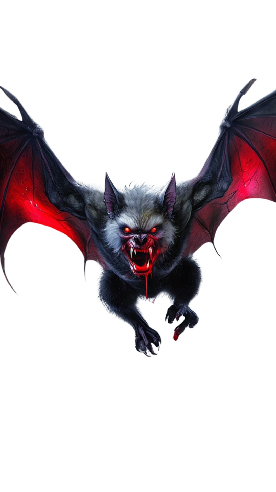

Falso Vampiro
Esse tipo de vampiro é extremamente raro. Diferente da maioria, ele não foi criado
diretamente pelo Vampiro Original. Apenas alguns vampiros além dele possuem a capacidade de
transformar alguém—e, quando conseguem, o resultado é essa aberração.

 Login
Login